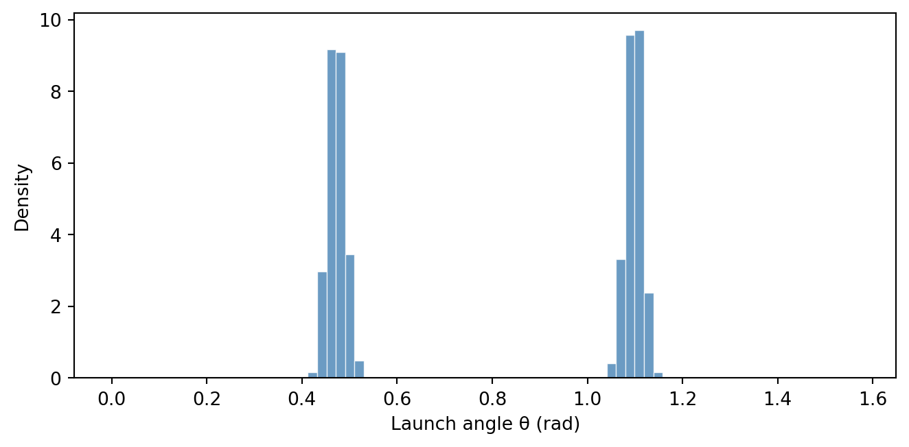
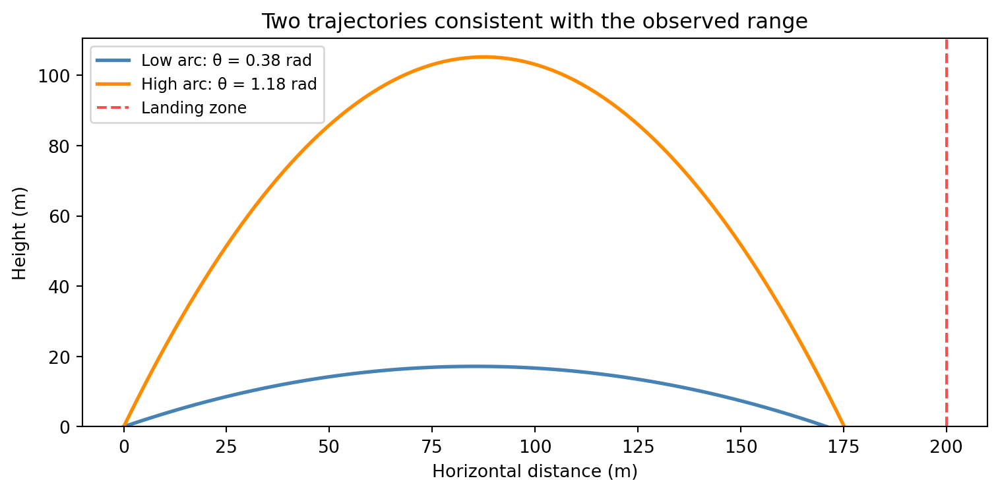
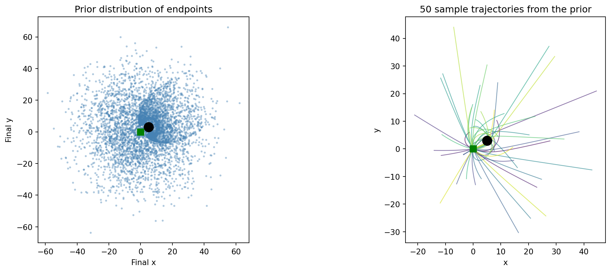
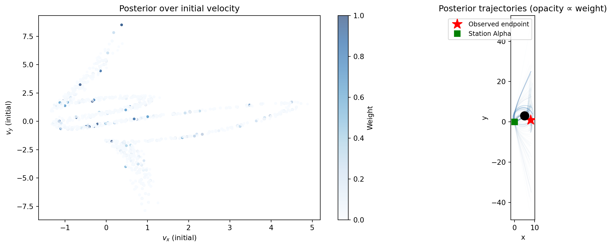

import torch
import torch.distributions as dist
import matplotlib.pyplot as plt
from weighted_sampling import model, sample, observe, summary, expectation
torch.manual_seed(42)Exercise 5: Cosmic Inference
In this exercise, we use the WeightedSampling.torch library to perform Bayesian inference in simple physics models. The key idea: when a forward simulation \(f(\theta)\) is non-injective — meaning several different parameter values \(\theta\) produce the same observation — Bayesian inference recovers the full set of consistent solutions, weighted by prior plausibility. This is much more informative than the single “best guess” that a classical solver would return.
We work through two scenarios of increasing complexity, each introducing new features of the library.
NotePrerequisites: Python libraries
This exercise uses the following libraries:
WeightedSampling.torch — for probabilistic programming and inference. Install via:
pip install git+https://github.com/MariusFurter/WeightedSampling.torch.gitPyTorch — for tensor operations. A short tutorial can be found in the Appendix.
matplotlib — for plotting.
If any packages are missing, run pip install torch matplotlib in your terminal.
Setup
NoteTorch compatibility reminder
Because the inference engine runs all \(N\) particles simultaneously via PyTorch broadcasting, any computation on sampled values must use torch-compatible operations. Use torch.sin(x) instead of math.sin(x), torch.where(cond, a, b) instead of Python if/else, etc. See the appendix for details.
Vignette 1: Lunar Cargo Delivery
A research station on the Moon uses a supply launcher to deliver cargo to remote landing zones across the lunar surface. The launcher gives the cargo an initial kick at a fixed speed \(v_0 = 20\;\text{m/s}\), but at a variable launch angle \(\theta\). After launch the cargo follows a ballistic trajectory in the Moon’s gravity (\(g_{\text{moon}} = 1.62\;\text{m/s}^2\)).
A sensor at the landing zone recorded that cargo arrived \(R_{\text{obs}} = 200\;\text{m}\) from the launcher. What was the launch angle \(\theta\)?

The range of a ballistic trajectory is given by: \[ R(\theta) = \frac{v_0^2 \sin(2\theta)}{g} \]
This function is non-injective: two different angles — a low “direct” arc and a high “lob” arc — produce the same range, since \(\sin(2\theta) = \sin(\pi - 2\theta)\). A classical solver would return one answer; Bayesian inference will reveal both.
NoteProvided helper functions: ballistic trajectory
The following functions are provided for you. Run this cell before starting the tasks.
def compute_range(v0, theta, g=1.62):
"""Compute the range of a ballistic projectile (flat ground).
Args:
v0: initial speed (scalar or tensor)
theta: launch angle in radians (scalar or tensor)
g: gravitational acceleration (default: lunar gravity, 1.62 m/s²)
Returns:
Range R = v0² sin(2θ) / g
"""
return v0**2 * torch.sin(2 * theta) / g
def compute_trajectory(v0, theta, g=1.62, n_points=100):
"""Compute the (x, y) trajectory of a ballistic projectile.
Args:
v0: initial speed (scalar)
theta: launch angle in radians (scalar)
g: gravitational acceleration (default: lunar gravity)
n_points: number of time steps
Returns:
(xs, ys) — 1-D tensors of shape (n_points,)
"""
t_flight = 2 * v0 * torch.sin(theta) / g
t = torch.linspace(0, float(t_flight), n_points)
xs = v0 * torch.cos(theta) * t
ys = v0 * torch.sin(theta) * t - 0.5 * g * t**2
return xs, ysForward simulation
Task 1a: Write a forward model (Easy)
Write a @model function lunar_launch() that:
- Samples a launch angle \(\theta \sim \text{Uniform}(0, \pi/2)\).
- Computes the range \(R\) using
compute_range(v0, theta)with \(v_0 = 20\) and the default lunar gravity.
Run the model with num_particles=5000. Then select 10 random particles from the result and plot their trajectories (use compute_trajectory with the sampled angles) on a single figure.
NoteHint: accessing results
The result object works like a dictionary. After running:
result = lunar_launch(num_particles=5000)you can access the sampled angles via result['theta'], which is a tensor of shape (5000,). To pick 10 random indices, use torch.randperm(5000)[:10].
TipSolution
v0 = 20.0 # m/s
g_moon = 1.62 # m/s²
@model
def lunar_launch():
theta = sample("theta", dist.Uniform(0, torch.pi / 2))
R = compute_range(v0, theta, g=g_moon)
return R
result = lunar_launch(num_particles=5000)
print(summary(result)){'theta': {'mean': tensor(0.7805), 'std': tensor(0.4513), 'n_unique': 5000}}# Plot 10 random trajectories
fig, ax = plt.subplots(figsize=(8, 4))
thetas = result["theta"].detach()
idx = torch.randperm(len(thetas))[:10]
for i in idx:
xs, ys = compute_trajectory(v0, thetas[i], g=g_moon)
ax.plot(xs, ys, linewidth=1.5)
ax.set_xlabel("Horizontal distance (m)")
ax.set_ylabel("Height (m)")
ax.set_ylim(bottom=0)
plt.tight_layout()
plt.show()
Task 1b: Visualize the prior over ranges (Easy)
Using the result from Task 1a, compute the range \(R\) for each particle and plot a histogram. Overlay the observed range \(R_{\text{obs}} = 200\;\text{m}\) as a vertical red line.
What is the shape of the distribution? Can you explain it from the formula \(R(\theta) = v_0^2 \sin(2\theta)/g\)?
TipSolution
ranges = compute_range(v0, result["theta"].detach(), g=g_moon)
R_obs = 200.0
fig, ax = plt.subplots(figsize=(7, 3.5))
ax.hist(ranges, bins=60, density=True, color="steelblue",
edgecolor="white", linewidth=0.5, alpha=0.8)
ax.axvline(R_obs, color="red", linestyle="--", linewidth=2,
label=f"$R_{{obs}}$ = {R_obs} m")
ax.set_xlabel("Range (m)")
ax.set_ylabel("Density")
ax.legend()
plt.tight_layout()
plt.show()
The distribution peaks near the maximum range \(R_{\max} = v_0^2/g \approx 247\;\text{m}\), because \(\sin(2\theta)\) spends more time near its maximum (where its derivative is small). This is a change-of-variables effect: the density of \(R = f(\theta)\) is proportional to \(|f'(\theta)|^{-1}\).
Conditioning on observation
Task 1c: Condition on the observed range (Medium)
Modify your model to include a noisy observation of the range. Add:
observe(R_obs, dist.Normal(R, sigma))where sigma = 5.0 represents measurement uncertainty (\(\pm 5\;\text{m}\)). Set R_obs = 200.0.
Run inference with num_particles=10000. Plot a histogram of the posterior over \(\theta\). What do you notice? Use summary() to inspect the result.
NoteHint
You only need to add one line to your model — the observe call. Everything else stays the same. Remember to pass R_obs and sigma as arguments to the model.
When plotting a histogram of the posterior, pass importance weights to ax.hist via the weights argument:
log_w = result["log_weights"].detach()
weights = torch.exp(log_w - log_w.max())
ax.hist(values, weights=weights, bins=80, density=True, ...)
TipSolution
R_obs = 200.0
sigma = 5.0
@model
def lunar_launch_conditioned(R_obs, sigma):
theta = sample("theta", dist.Uniform(0, torch.pi / 2))
R = compute_range(v0, theta, g=g_moon)
observe(R_obs, dist.Normal(R, sigma))
result_cond = lunar_launch_conditioned(R_obs, sigma, num_particles=10000)
print(summary(result_cond)){'theta': {'mean': tensor(0.7867), 'std': tensor(0.3130), 'n_unique': 9998}}thetas_post = result_cond["theta"].detach()
log_w = result_cond["log_weights"].detach()
weights = torch.exp(log_w - log_w.max())
fig, ax = plt.subplots(figsize=(7, 3.5))
ax.hist(
thetas_post,
weights=weights,
bins=80,
density=True,
color="steelblue",
edgecolor="white",
linewidth=0.5,
alpha=0.8,
)
ax.set_xlabel("Launch angle θ (rad)")
ax.set_ylabel("Density")
plt.tight_layout()
plt.show()
The posterior is bimodal: there are two peaks, one at a low angle (around \(\theta \approx 0.54\;\text{rad} \approx 31°\)) and one at a high angle (around \(\theta \approx 1.03\;\text{rad} \approx 59°\)). These are the two launch angles that produce a range of approximately 200 m. Since \(\sin(2\theta) = \sin(\pi - 2\theta)\), the complementary angle \(\pi/2 - \theta\) always gives the same range.
Task 1d: Interpret the posterior (Medium)
- Plot the two candidate trajectories corresponding to the two posterior modes. Overlay the landing zone at \(R_{\text{obs}} = 200\;\text{m}\).
- Use
expectation()to estimate \(P(\theta > \pi/4)\) — the probability that the high-arc trajectory was used. - Discussion: What happens to the posterior as the measurement noise \(\sigma \to 0\)? What if the observed range were exactly \(R_{\max} = v_0^2/g\) — would the posterior still be bimodal?
TipSolution
# 1. Plot two candidate trajectories
thetas_post = result_cond["theta"].detach()
low_angle = thetas_post[thetas_post < torch.pi / 4].median()
high_angle = thetas_post[thetas_post > torch.pi / 4].median()
fig, ax = plt.subplots(figsize=(8, 4))
for angle, label, color in [(low_angle, "Low arc", "steelblue"),
(high_angle, "High arc", "darkorange")]:
xs, ys = compute_trajectory(v0, angle, g=g_moon)
ax.plot(xs, ys, color=color, linewidth=2,
label=f"{label}: θ = {float(angle):.2f} rad")
ax.axvline(R_obs, color="red", linestyle="--", linewidth=1.5, alpha=0.7, label="Landing zone")
ax.set_xlabel("Horizontal distance (m)")
ax.set_ylabel("Height (m)")
ax.set_title("Two trajectories consistent with the observed range")
ax.legend(fontsize=9)
ax.set_ylim(bottom=0)
plt.tight_layout()
plt.show()
# 2. Probability of the high-arc trajectory
p_high = expectation(result_cond, lambda theta: (theta > torch.pi / 4).float())
print(f"P(θ > π/4) = {p_high.item():.3f}")P(θ > π/4) = 0.502- Discussion: As \(\sigma \to 0\), the posterior concentrates on exactly the two angles satisfying \(R(\theta) = R_{\text{obs}}\), becoming a pair of delta functions. With the uniform prior, both modes receive equal mass (\(P \approx 0.5\) each).
If \(R_{\text{obs}} = R_{\max} = v_0^2/g\), there is only one angle that achieves the maximum range: \(\theta = \pi/4\) (45°). The posterior would be unimodal. This is the unique angle where \(\sin(2\theta) = 1\).
Vignette 2: Gravitational Slingshot
A space probe was launched from Station Alpha (located at the origin) to explore a region of space. A massive planet at position \((p_x, p_y) = (5, 3)\) bends all nearby trajectories through its gravitational pull. After \(T\) seconds, a sensor detected the probe at coordinates \((x_T, y_T)\).
Given the observed endpoint, what was the probe’s initial velocity?

Unlike the ballistic case, different initial velocities can reach the same endpoint via very different paths — a direct trajectory, a trajectory that curves around the planet, or even one that loops around it. The mapping from initial velocity to final position is highly non-injective, making this a rich inference problem.
NoteProvided helper functions: gravity simulation & trajectory plotting
The following functions are provided for you. Run this cell before starting the tasks.
def simulate_gravity(x0, y0, vx0, vy0,
planet_x, planet_y, planet_mass,
dt=0.02, n_steps=300, softening=0.5):
"""Simulate a 2D trajectory under Newtonian gravity using leapfrog integration.
All positional/velocity arguments can be tensors of shape (N,) to simulate
N particles in parallel.
Args:
x0, y0: initial position
vx0, vy0: initial velocity
planet_x, planet_y: position of the massive body
planet_mass: gravitational parameter GM of the planet
dt: time step
n_steps: number of integration steps
softening: softening length ε to prevent singularity at r=0;
force ∝ 1/(r² + ε²)
Returns:
(xs, ys) — tensors of shape (n_steps, N) giving the trajectory
"""
x = x0.clone() if isinstance(x0, torch.Tensor) else torch.tensor(x0).float()
y = y0.clone() if isinstance(y0, torch.Tensor) else torch.tensor(y0).float()
vx = vx0.clone() if isinstance(vx0, torch.Tensor) else torch.tensor(vx0).float()
vy = vy0.clone() if isinstance(vy0, torch.Tensor) else torch.tensor(vy0).float()
# Broadcast all inputs to the same shape so that torch.stack works
x, y, vx, vy = torch.broadcast_tensors(x, y, vx, vy)
x, y, vx, vy = x.clone(), y.clone(), vx.clone(), vy.clone()
xs_list = []
ys_list = []
for _ in range(n_steps):
xs_list.append(x.clone())
ys_list.append(y.clone())
dx = x - planet_x
dy = y - planet_y
r2 = dx**2 + dy**2 + softening**2
r = torch.sqrt(r2)
acc = -planet_mass / r2
ax = acc * dx / r
ay = acc * dy / r
# Leapfrog: kick-drift-kick
vx = vx + 0.5 * ax * dt
vy = vy + 0.5 * ay * dt
x = x + vx * dt
y = y + vy * dt
dx = x - planet_x
dy = y - planet_y
r2 = dx**2 + dy**2 + softening**2
r = torch.sqrt(r2)
acc = -planet_mass / r2
ax = acc * dx / r
ay = acc * dy / r
vx = vx + 0.5 * ax * dt
vy = vy + 0.5 * ay * dt
xs = torch.stack(xs_list) # shape (n_steps, ...)
ys = torch.stack(ys_list)
return xs, ys
def plot_trajectories(xs_list, ys_list, weights=None, ax=None,
cmap="viridis", alpha_scale=0.5, linewidth=1.0,
max_trajectories=200):
"""Plot multiple trajectories with optional weight-based opacity.
Args:
xs_list: list of 1-D tensors (one per trajectory), or (n_steps, N) tensor
ys_list: same shape as xs_list
weights: optional 1-D tensor of importance weights
ax: matplotlib axes (created if None)
cmap: colormap name for coloring trajectories
alpha_scale: maximum opacity
max_trajectories: subsample if more trajectories than this
"""
if ax is None:
fig, ax = plt.subplots(figsize=(8, 5))
# Handle (n_steps, N) tensor format
if isinstance(xs_list, torch.Tensor) and xs_list.dim() == 2:
N = xs_list.shape[1]
xs_list = [xs_list[:, i] for i in range(N)]
ys_list = [ys_list[:, i] for i in range(N)]
N = len(xs_list)
if N > max_trajectories:
idx = torch.randperm(N)[:max_trajectories]
else:
idx = torch.arange(N)
if weights is not None:
w = weights[idx].float()
w = w / w.max()
else:
w = torch.ones(len(idx))
cm = plt.get_cmap(cmap)
for j, i in enumerate(idx):
color = cm(j / len(idx))
alpha = max(0.02, float(w[j]) * alpha_scale)
ax.plot(xs_list[i].detach().numpy(), ys_list[i].detach().numpy(),
color=color, alpha=alpha, linewidth=linewidth)
return axForward simulation
Task 2a: Explore the simulation (Easy)
Use the provided simulate_gravity function to simulate a single trajectory. The probe launches from the origin with some initial velocity \((v_x, v_y)\), influenced by a planet with gravitational parameter \(GM = 30\) at position \((5, 3)\).
- Run the simulation with initial velocity \((v_x, v_y) = (3.0, 2.0)\) and plot the trajectory. Mark the planet’s position with a large dot.
- Try a few different initial velocities by hand and observe how the trajectories change. Can you find two different velocities that end up near the same point?
NoteHint: calling simulate_gravity
xs, ys = simulate_gravity(
x0=0.0, y0=0.0, # launch from origin
vx0=3.0, vy0=2.0, # initial velocity
planet_x=5.0, planet_y=3.0,
planet_mass=30.0, # GM parameter
dt=0.02, n_steps=300
)
# xs, ys are 1-D tensors of shape (300,)
TipSolution
# Simulation parameters
planet_x, planet_y = 5.0, 3.0
planet_mass = 30.0
# Try several initial velocities
velocities = [
(3.0, 2.0),
(4.5, 1.0),
(2.0, 4.0),
(5.0, 0.5),
(-1.0, 5.0),
]
fig, ax = plt.subplots(figsize=(8, 6))
cm = plt.get_cmap("tab10")
for j, (vx, vy) in enumerate(velocities):
xs, ys = simulate_gravity(
x0=0.0, y0=0.0, vx0=vx, vy0=vy,
planet_x=planet_x, planet_y=planet_y,
planet_mass=planet_mass,
dt=0.02, n_steps=300,
)
ax.plot(xs.numpy(), ys.numpy(), color=cm(j), linewidth=1.5,
label=f"$v$ = ({vx}, {vy})")
# Mark endpoint
ax.plot(float(xs[-1]), float(ys[-1]), "o", color=cm(j), markersize=5)
# Mark planet and launch site
ax.plot(planet_x, planet_y, "ko", markersize=15, zorder=5)
ax.annotate("Planet", (planet_x, planet_y), textcoords="offset points",
xytext=(10, 10), fontsize=10)
ax.plot(0, 0, "s", color="green", markersize=10, zorder=5, label="Station Alpha")
ax.set_xlabel("x")
ax.set_ylabel("y")
ax.set_title("Trajectories under gravitational influence")
ax.legend(fontsize=8, loc="upper left")
ax.set_aspect("equal")
plt.tight_layout()
plt.show()
The gravitational pull of the planet bends each trajectory differently. Trajectories that pass close to the planet are deflected strongly, while those farther away follow nearly straight paths. It is easy to see that multiple initial velocities could reach similar endpoints.
Task 2b: Forward model (Medium)
Write a @model function probe_launch() that:
- Samples initial velocity components \(v_x \sim \text{Normal}(0, 3)\) and \(v_y \sim \text{Normal}(0, 3)\).
- Simulates the trajectory using
simulate_gravitywith the parameters from Task 2a. - Records the final position \((x_T, y_T)\) by accessing the last element of the returned trajectory tensors.
Run the model with num_particles=5000. Create two plots:
- A scatter plot of the prior distribution of endpoints (final \((x_T, y_T)\) for all particles).
- An overlay of 50 random trajectories from the prior, using
plot_trajectories.
NoteHint: extracting endpoints from batched simulation
When you pass tensors of shape (N,) as initial velocities to simulate_gravity, the returned xs and ys have shape (n_steps, N). The final position of each particle is xs[-1] and ys[-1], both of shape (N,).
TipSolution
@model
def probe_launch():
vx = sample("vx", dist.Normal(0.0, 3.0))
vy = sample("vy", dist.Normal(0.0, 3.0))
xs, ys = simulate_gravity(
x0=0.0, y0=0.0, vx0=vx, vy0=vy,
planet_x=planet_x, planet_y=planet_y,
planet_mass=planet_mass,
dt=0.02, n_steps=300,
)
return xs, ys
result_probe = probe_launch(num_particles=5000)vx_samples = result_probe["vx"].detach()
vy_samples = result_probe["vy"].detach()
# Re-run simulation for visualization (we need the trajectories, not just vx/vy)
with torch.no_grad():
all_xs, all_ys = simulate_gravity(
x0=0.0, y0=0.0, vx0=vx_samples, vy0=vy_samples,
planet_x=planet_x, planet_y=planet_y,
planet_mass=planet_mass,
dt=0.02, n_steps=300,
)
final_x = all_xs[-1]
final_y = all_ys[-1]
fig, axes = plt.subplots(1, 2, figsize=(14, 5))
# Left: prior scatter of endpoints
ax = axes[0]
ax.scatter(final_x.numpy(), final_y.numpy(), s=3, alpha=0.3, color="steelblue")
ax.plot(planet_x, planet_y, "ko", markersize=12, zorder=5)
ax.plot(0, 0, "s", color="green", markersize=8, zorder=5)
ax.set_xlabel("Final x")
ax.set_ylabel("Final y")
ax.set_title("Prior distribution of endpoints")
ax.set_aspect("equal")
# Right: 50 random trajectories
ax = axes[1]
plot_trajectories(all_xs, all_ys, ax=ax, max_trajectories=50, alpha_scale=0.6)
ax.plot(planet_x, planet_y, "ko", markersize=12, zorder=5)
ax.plot(0, 0, "s", color="green", markersize=8, zorder=5)
ax.set_xlabel("x")
ax.set_ylabel("y")
ax.set_title("50 sample trajectories from the prior")
ax.set_aspect("equal")
plt.tight_layout()
plt.show()
Conditioning on observation
Task 2c: Infer the initial velocity (Medium)
Suppose the probe was detected at \((x_T, y_T) = (8.0, 1.0)\) with measurement uncertainty \(\sigma = 0.5\) in each coordinate.
Modify your model to observe the final position:
observe(x_obs, dist.Normal(final_x, sigma))
observe(y_obs, dist.Normal(final_y, sigma))Run inference with num_particles=10000. Create:
- A scatter plot of the posterior over initial velocities \((v_x, v_y)\).
- An overlay of posterior trajectories, colored by weight. Mark the observed endpoint.
- Use
summary()to report the posterior mean and standard deviation for \(v_x\) and \(v_y\).
TipSolution
x_obs, y_obs = 8.0, 1.0
obs_sigma = 0.5
@model
def probe_launch_conditioned(x_obs, y_obs, sigma):
vx = sample("vx", dist.Normal(0.0, 3.0))
vy = sample("vy", dist.Normal(0.0, 3.0))
xs, ys = simulate_gravity(
x0=0.0, y0=0.0, vx0=vx, vy0=vy,
planet_x=planet_x, planet_y=planet_y,
planet_mass=planet_mass,
dt=0.02, n_steps=300,
)
observe(x_obs, dist.Normal(xs[-1], sigma))
observe(y_obs, dist.Normal(ys[-1], sigma))
result_cond_probe = probe_launch_conditioned(x_obs, y_obs, obs_sigma, num_particles=10000)
stats = summary(result_cond_probe)
print(f"vx: mean = {stats['vx']['mean']:.3f} ± {stats['vx']['std']:.3f}")
print(f"vy: mean = {stats['vy']['mean']:.3f} ± {stats['vy']['std']:.3f}")
print(f"Unique particles: {stats['vx']['n_unique']}")vx: mean = 0.521 ± 1.334
vy: mean = 0.218 ± 2.430
Unique particles: 864vx_post = result_cond_probe["vx"].detach()
vy_post = result_cond_probe["vy"].detach()
log_w = result_cond_probe["log_weights"].detach()
weights = torch.exp(log_w - log_w.max())
fig, axes = plt.subplots(1, 2, figsize=(14, 5))
# Left: posterior scatter over initial velocities
ax = axes[0]
sc = ax.scatter(vx_post.numpy(), vy_post.numpy(),
c=weights.numpy(), cmap="Blues", s=8, alpha=0.6)
ax.set_xlabel("$v_x$ (initial)")
ax.set_ylabel("$v_y$ (initial)")
ax.set_title("Posterior over initial velocity")
plt.colorbar(sc, ax=ax, label="Weight")
# Right: posterior trajectories
ax = axes[1]
with torch.no_grad():
post_xs, post_ys = simulate_gravity(
x0=0.0, y0=0.0, vx0=vx_post, vy0=vy_post,
planet_x=planet_x, planet_y=planet_y,
planet_mass=planet_mass,
dt=0.02, n_steps=300,
)
plot_trajectories(post_xs, post_ys, weights=weights, ax=ax,
max_trajectories=300, alpha_scale=0.4, cmap="Blues")
ax.plot(x_obs, y_obs, "*", color="red", markersize=15, zorder=5, label="Observed endpoint")
ax.plot(planet_x, planet_y, "ko", markersize=12, zorder=5)
ax.plot(0, 0, "s", color="green", markersize=8, zorder=5, label="Station Alpha")
ax.set_xlabel("x")
ax.set_ylabel("y")
ax.set_title("Posterior trajectories (opacity ∝ weight)")
ax.legend(fontsize=9)
ax.set_aspect("equal")
plt.tight_layout()
plt.show()
The posterior over initial velocities may reveal multiple clusters — corresponding to trajectories that reach the observed endpoint via different paths (e.g., a direct route vs. one that swings around the planet).
Task 2d: Visualize the posterior trajectories (Medium)
Plot up to 200 posterior trajectories on a single figure, with line opacity proportional to the importance weight. Mark the planet, the observed endpoint, and Station Alpha. Use a colormap (e.g. "Blues") so that high-weight trajectories stand out visually.
NoteHint: weight-based opacity
Normalize the weights to \([0, 1]\) by dividing by their maximum, then use each weight to set the alpha parameter when plotting.
TipSolution
n_plot = 200
idx_plot = torch.randperm(len(vx_post))[:n_plot]
w_plot = weights[idx_plot]
w_plot = w_plot / w_plot.max()
with torch.no_grad():
plot_xs, plot_ys = simulate_gravity(
x0=0.0,
y0=0.0,
vx0=vx_post[idx_plot],
vy0=vy_post[idx_plot],
planet_x=planet_x,
planet_y=planet_y,
planet_mass=planet_mass,
dt=0.02,
n_steps=300,
)
fig, ax = plt.subplots(figsize=(6, 6))
cm = plt.get_cmap("Blues")
for j in range(n_plot):
# Use a power transform so low-weight lines are much fainter
w_val = float(w_plot[j])
alpha = w_val
color = cm(0.25 + 0.75 * w_val)
lw = 0.4 + 1.6 * w_val # thicker lines for high-weight trajectories
ax.plot(
plot_xs[:, j].numpy(),
plot_ys[:, j].numpy(),
color=color,
alpha=alpha,
linewidth=lw,
)
ax.plot(planet_x, planet_y, "ko", markersize=12, zorder=5, label="Planet")
ax.plot(
x_obs, y_obs, "*", color="red", markersize=15, zorder=5, label="Observed endpoint"
)
ax.plot(0, 0, "s", color="green", markersize=8, zorder=5, label="Station Alpha")
ax.set_xlabel("x")
ax.set_ylabel("y")
ax.set_title("Posterior probe trajectories (opacity ∝ weight)")
# Pad axes to fill a landscape viewport while keeping equal scaling
ax.set_xlim(-20, 20)
ax.set_ylim(-40, 40)
xlo, xhi = ax.get_xlim()
ylo, yhi = ax.get_ylim()
dx, dy = xhi - xlo, yhi - ylo
target_ratio = 6 / 6 # match figsize width/height
if dx / dy < target_ratio:
# data is taller than wide — widen x
new_dx = dy * target_ratio
cx = (xlo + xhi) / 2
ax.set_xlim(cx - new_dx / 2, cx + new_dx / 2)
else:
# data is wider than tall — increase y
new_dy = dx / target_ratio
cy = (ylo + yhi) / 2
ax.set_ylim(cy - new_dy / 2, cy + new_dy / 2)
ax.legend(fontsize=9)
plt.tight_layout()
plt.show()
The high-weight trajectories (darker, more opaque) all converge on the observed endpoint, while low-weight trajectories (faint) miss the target. If multiple trajectory families reach the endpoint — e.g., one passing above the planet and another below — they will both appear as distinct bundles.